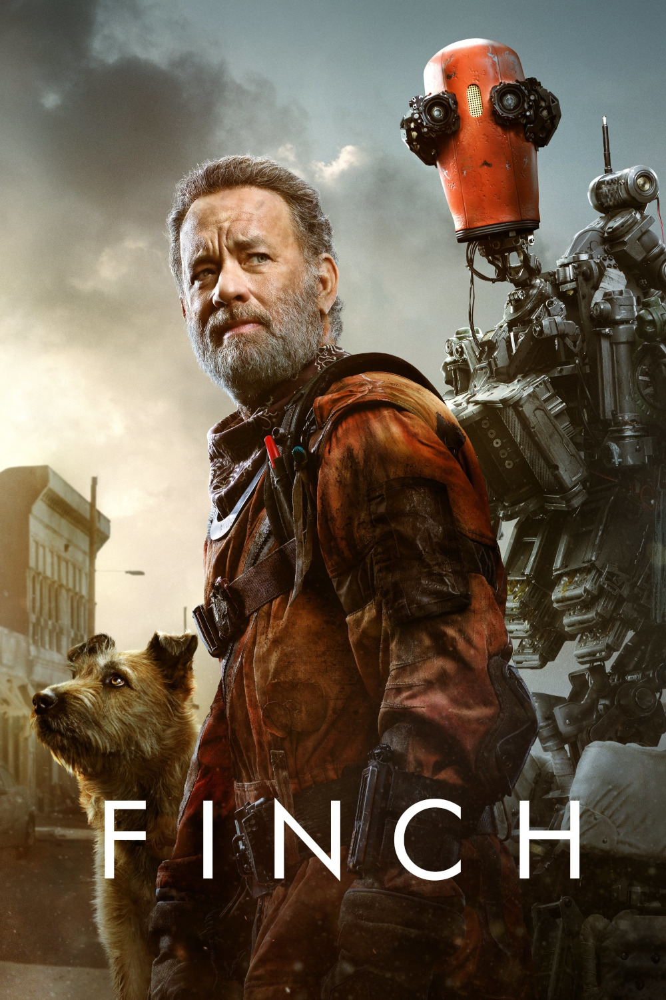

Мировая премьера: 5 ноября 2021
Слоган: Рождение отваги. Рождение надежды. Рождение любви.
Сюжет: Изобретатель Финч отправляется в опасное путешествие через постапокалиптический мир, чтобы найти новый дом для своей необычной семьи – любимого пса и недавно созданного робота.
Режиссёр: Мигель Сапочник
В ролях:
| Том Хэнкс | Финч Вайнберг |
| Калеб Ландри Джонс | Джефф |
Продолжительность: 1 ч. 48 мин.
Рейтинг: 6.9